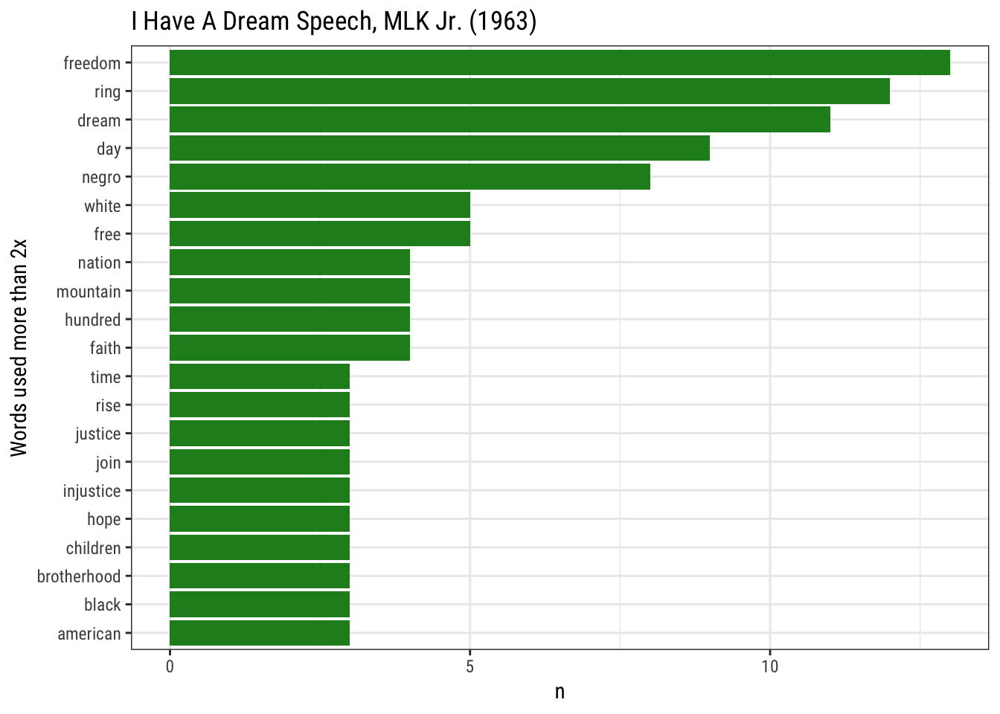

Analyzing Text in R
There are many kinds of data, including text! We can read text into R just like any other type of data, and using a number of handy packages, we can extract and parse out words, sentences, etc. Once the data has been “de-constructed”, it’s much easier to analyze and visualize our text.
Let’s learn about doing text mining with R. This is going to be a very short demo using the “I have a dream” speech by Martin Luther King Jr. There is a much more comprehensive and excellent resource for working with text in R, “Text Mining with R” by Julia Silge and David Robinson. We’ll reference a few chapters from this book in this lesson.
Text Mining Packages in R
There are always more packages that appear on CRAN, but the main libraries we’ll want for this pipeline are:
dplyrtidytext
An optional package that is fun to play with is gutenbergr, which provides access to public domain works from the Project Gutenberg collection.
Tidying Text
Let’s read Ch. 1 of Text Mining in R for some more info on character vectors in R. This code is taken from Ch 1 (Silge & Robinson 2017).
# basic text from Emily Dickinson
text <- c("Because I could not stop for Death -",
"He kindly stopped for me -",
"The Carriage held but just Ourselves -",
"and Immortality")
# make it into a dataframe
text_df <- data_frame(line = 1:4, text = text)What is a token?
What is tokenization?
Tokenization of Text
Let’s break these chunks of text into individual pieces, or tokens.
# now extract the individual words
text_df %>%
unnest_tokens(word, text)## # A tibble: 20 x 2
## line word
## <int> <chr>
## 1 1 because
## 2 1 i
## 3 1 could
## 4 1 not
## 5 1 stop
## 6 1 for
## 7 1 death
## 8 2 he
## 9 2 kindly
## 10 2 stopped
## 11 2 for
## 12 2 me
## 13 3 the
## 14 3 carriage
## 15 3 held
## 16 3 but
## 17 3 just
## 18 3 ourselves
## 19 4 and
## 20 4 immortalityOnce we are able to parse the pieces of text out into individual components, it’s easier to use a standard analysis pipeline similar to Hadley Wickham’s “Import > Tidy > Transform/Visualize/Model > Communicate”.
This figure (from Silge and Robinson, 2017) gives a nice overview of the process of text mining/analysis.

Silge & Robinson, 2017
Jane Austen Example
For a nice example, let’s check out the Jane Austen text tidying code from Ch 1.3 of Text Mining with R.
Analysis of “I Have a Dream” (MLK Jr.)
Let’s assess Martin Luther King Jr.’s “I Have A Dream” and identify the most commonly used words. The data file for this is here, you’ll need to make sure you download to a “data” folder within your project. Also, make sure you have the readr and ggplot2 packages installed.
suppressPackageStartupMessages({
library(readr);
library(ggplot2)
})
# read in the data (same as you would a csv)
mlk<-read_lines("data/I_have_a_dream_1963.md")
# this splits the chunk of text into lines
mlk_text <- data_frame(line = 1:length(mlk), text = mlk)
# filter blank lines (even rows)
mlk_text <- mlk_text %>% filter(line %% 2 == 1) %>%
mutate(line = 1:nrow(.)) # renumber lines
# Make single word vector
mlk_text<- mlk_text %>%
unnest_tokens(word, text)
# Now remove all the stop words using an "anti_join"
tidy_mlk <- mlk_text %>%
anti_join(stop_words)## Joining, by = "word"# count the use of each word
tidy_mlk %>%
count(word, sort = TRUE) ## # A tibble: 214 x 2
## word n
## <chr> <int>
## 1 freedom 13
## 2 ring 12
## 3 dream 11
## 4 day 9
## 5 negro 8
## 6 free 5
## 7 white 5
## 8 faith 4
## 9 hundred 4
## 10 mountain 4
## # ... with 204 more rows# count use and then plot by most to least for words used more than twice in the speech
tidy_mlk %>%
count(word, sort = TRUE) %>%
filter(n > 2) %>%
mutate(word = reorder(word, n)) %>%
ggplot(aes(word, n)) +
geom_bar(stat = "identity", fill="forestgreen") +
xlab(NULL) +
theme_bw(base_family = "Roboto Condensed") +
coord_flip() + labs(x="Words used more than 2x", title="I Have A Dream Speech, MLK Jr. (1963)")
Word Co-occurences and Correlations
See Ch 8.2 from Text Mining with R.
This lesson was contributed by Ryan Peek.